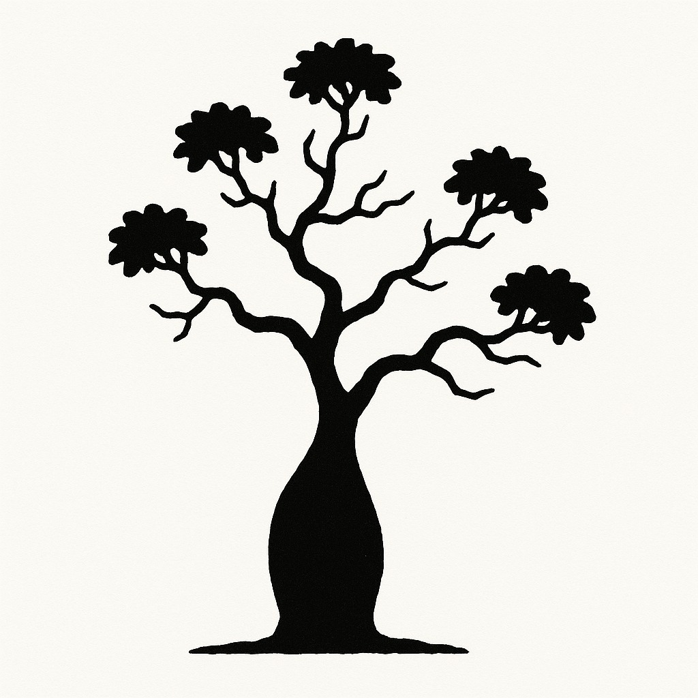
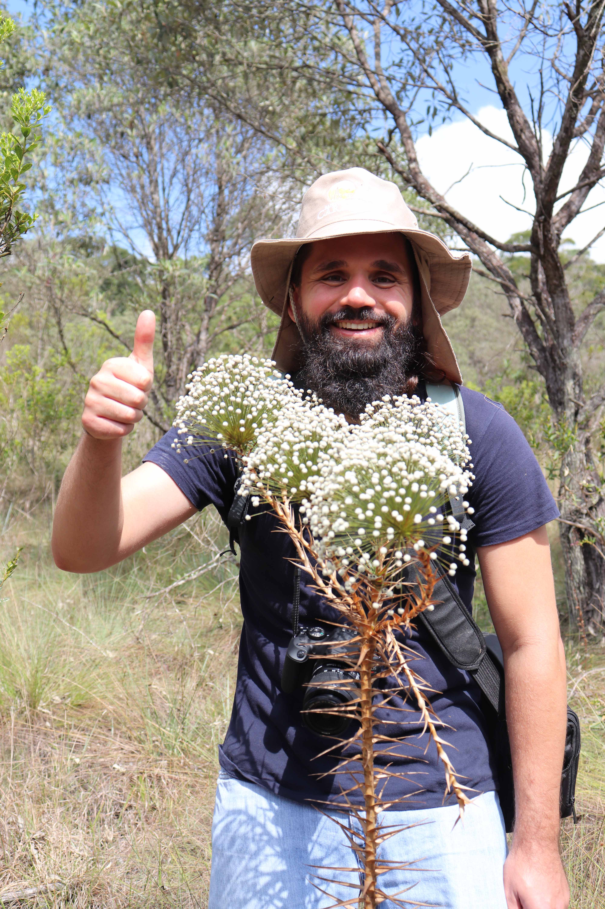
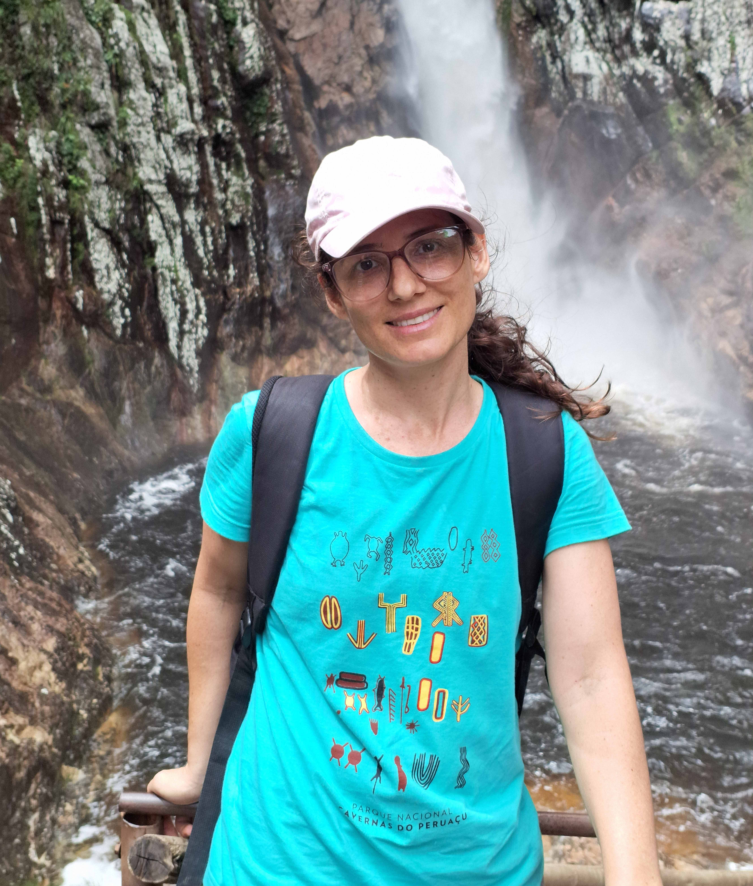
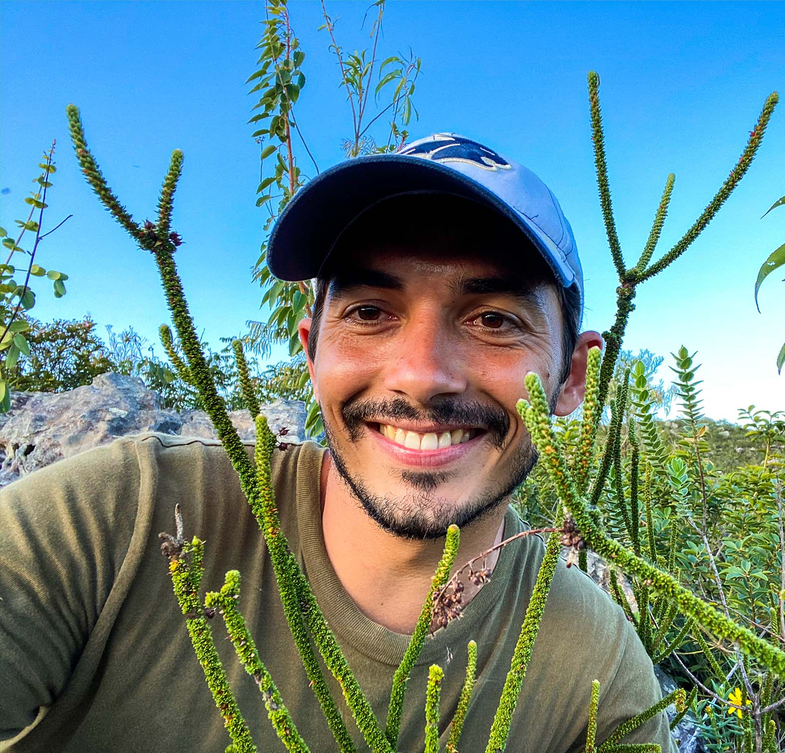
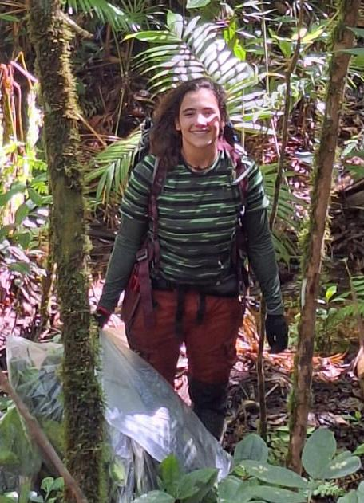
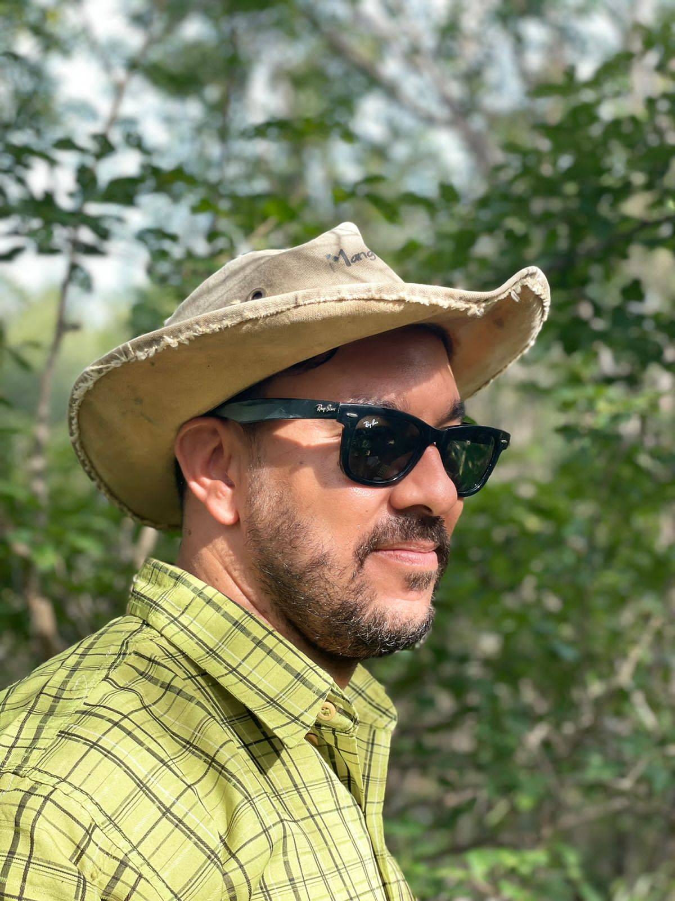
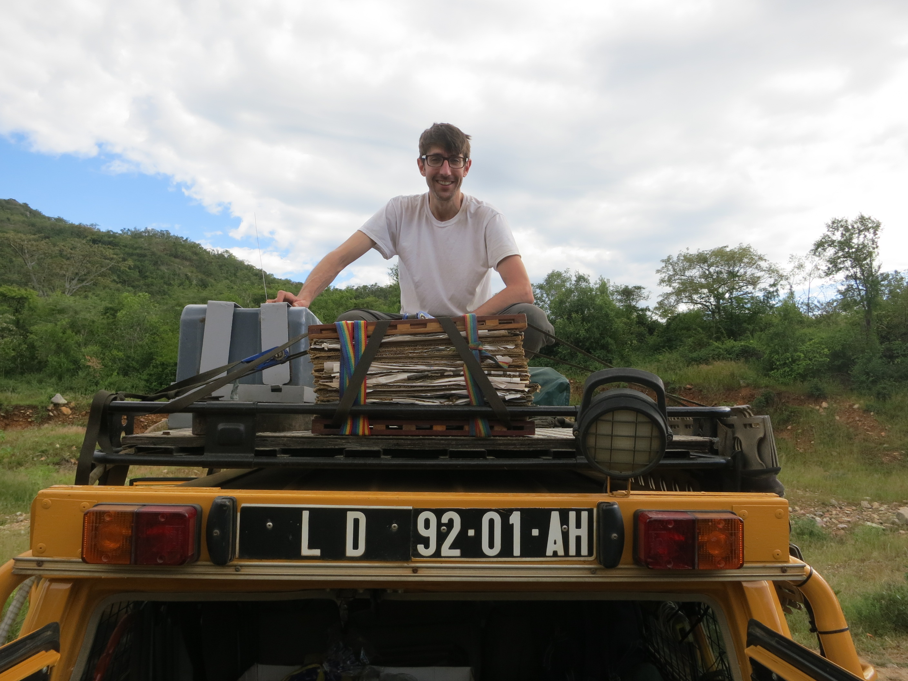
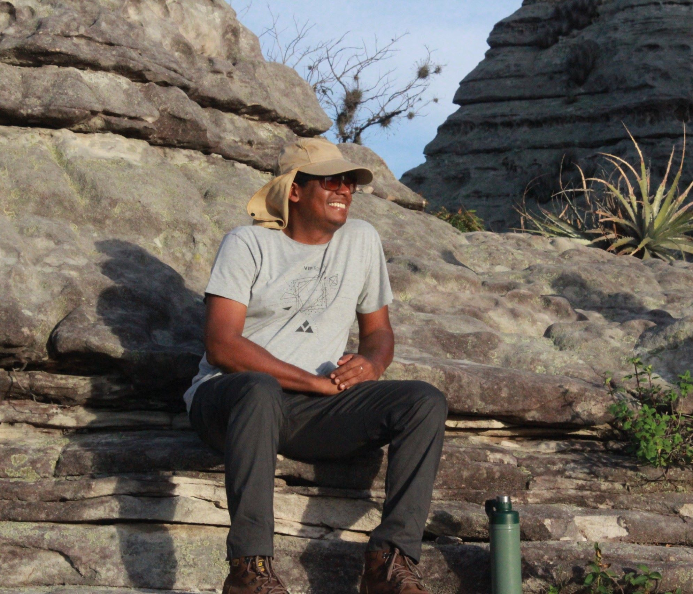

The RedeC2 Team

Camilla Farrapo

RedeC2 member at Universidade Federal de Lavras

Danilo Neves


RedeC2 member at Universidade Federal de Minas Gerais

Desirée Ramos


RedeC2 member at Universidade Estadual Paulista (Rio Claro)

Domingos Cardoso


RedeC2 member at Jardim Botânico do Rio de Janeiro
Felipe Carvalho

RedeC2 member at Universidade Federal de Lavras

Giulia Cavalcanti Ottino


RedeC2 member at Jardim Botânico do Rio de Janeiro
Imma Oliveras Menor

RedeC2 member at Institut de Recherche pour le Développement
Italo Coutinho

RedeC2 member at Universidade Federal de Ceará
Jarcilene Silva de Almeida


RedeC2 member at Universidade Federal de Pernambuco

Jhonathan Oliveira Silva


RedeC2 member at Universidade Federal do Vale do São Francisco

Kyle Dexter

RedeC2 member at Universita di Torino
Magna Soelma

RedeC2 member at EMBRAPA
Maria Antonia Carniello

RedeC2 member at Universidade Estadual de Mato Grosso (Cáceres)
Mário Marcos do Espírito Santo

RedeC2 member at Universidade de Estadual Montes Claros

Mauro Guida Santos


RedeC2 member at Universidade Federal de Pernambuco
Moabe Fernandes

RedeC2 member at Royal Botanic Gardens, Kew
Patricia Morellato

RedeC2 member at Universidade Estadual Paulista (Rio Claro)
Priscila Oliveira

RedeC2 member at Universidade de Estadual Montes Claros
Priscyla Maria Silva Rodrigues


RedeC2 member at Universidade Federal do Vale do São Francisco
Renata Françoso

RedeC2 member at Serviço Florestal Brasileiro
Renato Vanderlei

RedeC2 member at Universidade Federal de Pernambuco
Rubens Santos

RedeC2 member at Universidade Federal de Lavras
Toby Pennington

RedeC2 member at University of Exeter